《御製康熙字典序》
"Imperially-Made Preface [unto the] K'ang-hi Dictionary"
The K'ang-hi Dictionary is an impressive work.
Commissioned by the K'ang-hi Emperor,
and completed five years later in 1716,
it covers some 47k Chinese characters.
Its system of 214 radicals is still used in Unicode today.
I consulted the dictionary extensively whilst compiling
the stroke input data set that is used in my keyboard app.
Although I found many inconsistencies within the dictionary
with regards to stroke count,
there are (to my knowledge) no instances of duplicate character listings.
This is impressive for an 18th-century work;
by comparison, the folks at Unicode
managed to make at least two duplicate pairs
whilst compiling CJK Unified Ideographs Extension A in the 1990s
(U+3588 㖈 and U+439B 䎛; U+363D 㘽 and U+39B3 㦳).
K'ang-hi's preface names the work 字典, "character canon",
which ultimately became the modern Chinese term for dictionary.
Translation
The Chinese source text below is the
同文書局 edition,
with olden-style punctuation inserted by me.
Though the preface text was composed by the emperor K'ang-hi himself,
the actual characters of the preface pages
are the brushwork of the scribe Ch'ên Pang-yen,
who has used unorthodox variant forms in his calligraphy.
He prefers the open-mouth 厶 rather than the closed-mouth 口,
e.g. in 國 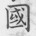, 說 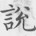, 韻 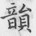, etc.
In some cases the same character appears differently;
for example 所 appears:
-
thrice as the orthodox ⿰戸斤 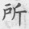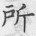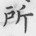,
-
once as the common ⿰户斤 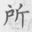, and
-
thrice as the semi-cursive ⿱一⿰卪亇 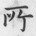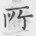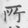.
Although this is contrary to the spirit of the compilers
of the rest of the dictionary
(who endeavoured to present a consistent standard form for all characters),
the calligraphic variation is nevertheless aesthetically pleasing.
I have attempted to map variant characters
to their (visually) nearest code point in Unicode,
but concede that in most instances this will not be possible
(because Han unification is plagued with inconsistency).
《御製康煕字典序》
"Imperially-Made Preface [unto the] K'ang-hi Dictionary"
-
Here we have
U+7155 煕 rather than U+7199 熙.
-
字典： dictionary; lit. character canon
易傳曰、上古結繩而治、後世聖人易之以書契、百官以治、萬民以察。
[The] Commentary [on the] Changes saith:
[In] upper antiquity [they] knotted cord and [were] governed;
[then the] sagely men of latter generations
exchanged it with written bond,
with [which the] hundred officials [were] governed,
[and] with [which] the myriad people [were] inspected.
周官外史、掌達書名扵四方。
[The] Outer Historians of [the] Officials of Chou,
[were] in charge of conveying written glyphs unto [the] four directions
[of the earth].
-
周官： [the] Officials of Chou
A text on bureaucracy, also called 周禮, "[the] Rites of Chou".
-
扵
Variant of 於.
Written ⿰才仒 in the original text,
but your browser's font will probably show ⿰扌仒 instead.
保氏養國子、敎以六書、而考文列於三重。
[The] Securers raising [the] noble children,
[did] teach of [the] Six Scripts,
and [did] examine rowed text in three layers.
-
國子： noble children; lit. children of [the] nation
-
文列： rowed text; lit. text rows
盖以其為萬事百物之統紀、而足以助流政敎也。
For [they] thought of it as [the] governing law of
[the] myriad matters [and the] hundred things,
and sufficient to assist [the] spreading of [the] teaching of governance.
古文篆隷随世逓變、至漢許氏始有說文、然重義而略於音、
[The] olden glyphs of seal-script [and] clerical-script
changed by degrees according unto [the] generations,
[and only] unto Hü of Han
was there first [his] Explaining Glyphs,
[which did] esteem meaning but [was] omissive in pronunciation;
-
随： according unto; lit. following
-
逓
Written with 8 residual strokes 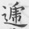 in the original text, rather than 7.
Variant of 遞.
-
始： first; lit. began
-
說文： Explaining Glyphs
Short for 說文解字, "Explaining Glyphs [and] Interpreting Characters",
an ancient dictionary by Hü Shên.
-
略： omissive; or neglectful
故世謂漢儒識文字而不識子母、江左之儒識四聲而不識七音。
therefore [the] world speaketh of the Han scholar
knowing [his] glyphs [and] characters
but knowing not [his] initials [and] finals,
[and] the scholar of [the] River's East knowing [the] Four Tones
but knowing not [the] Seven Sounds.
-
左： East; lit. Left
-
四聲： Four Tones
The four tones of Middle Chinese,
namely 平 (level), 上 (rising), 去 (departing), and 入 (entering).
Not the four tones of modern Mandarin.
-
七音： Seven Sounds
The seven classes of initial consonant:
脣 (lip), 舌 (tongue), 牙 (molar), 齒 (incisor),
喉 (throat), 半舌 (half-tongue), and 半齒 (half-incisor).
七音之傳、肈自西域、以三十六字為母、従為四聲、横為七音、而後天下之聲、緫扵是焉。
[The] transmission of [the] Seven Sounds,
[was] initiated from [the] western domains,
with [the] Thirty-Six Characters as [the] initials,
[the] vertical being [the] Four Tones,
[and the] horizontal being [the] Seven Sounds,
and afterward [all] sounds under Heaven,
[were] aggregated in this.
嘗考管子之書所載、五方之民、其聲之清濁髙下、各象其川原泉壤淺深廣狭而生。
[I] once examined that recorded [in the] Writings of Master Kuan,
[that] the people of [the] Five Places,
[the] clearness [and] murkiness
[and the] highs [and] downs of their sounds,
[are] each begotten of [a] resemblance [unto the]
shallowness [or] depth [and] breadth [or] narrowness
of their streams, plains, springs, [and] soils.
故于五音、必有所偏得、則能全備七音者、鮮矣。
Therefore in [the] Five Sounds,
there must be that gotten biasedly;
thus those able [to] wholly provide of [the] Seven Sounds,
[are] rare.
此歴代相傳取音者所以不能較若畫一也。
This [be] that by which [the] taking of sounds
[as] transmitted down through [the] ages
[hath been] unable [to be] evident as [the] stroke of one.
自說文以後、字書善者、扵鿄則玉萹、扵唐則廣韻、扵宋則集韻、扵金則五音集韻、扵元則韻㑹、扵明則洪武正韻、皆流通當世、衣被後學。
Since Explaining Glyphs [and] thereafter,
the good of [the] character books, [were]
in [the] Liang [Dynasty the] Jade Chapters,
in [the] T'ang [the] Broadened Rimes,
in [the] Sung [the] Collected Rimes,
in [the] Kin [the] Five Sounds' Collected Rimes,
in [the] Yüan [the] Rime Assembly,
[and] in [the] Ming [the] Hung-wu Proper Rimes,
all spread throughout [their] present generations,
[and as] clothing [and] blankets [to] latter learning.
其傳而未甚顯者、尚數十百家。
Those transmitted but not yet exceeding distinguished,
[be] yet several tens [or] hundreds of schools.
當其編輯、皆自謂毫髮無憾、而後儒推論輙多同異、
[In] undertaking their editings,
[they] all self-speak of having not [a] fine hair of regret,
but latter scholar's deductions [and] discourses
[are] always many [in their] concurrences [and] differences.
或所收之字繁省失中、或所引之書濫踈無準、或字有數義而不詳、或音有數切而不備、
Perhaps [the] characters that [be] admitted
[are] numerous [or] scarce missing [the] mark;
perhaps [the] writings that [be] drawn upon
[are] excessive [or] sparse without standard;
perhaps [a] character have several meanings
but [which are] not detailed;
perhaps [a] pronunciation have several dissections
but [which are] not provided.
曽無善兼美具、可奉為典常而不易者。
There [hath] never been [one with]
goodness [and] simultaneously beauty equipped,
[even] that which can [be] offered as [a] canon-constant
and [ever] unchanging.
朕每念經傳至博、音義繁賾、據一人之見、守一家之說、未必能㑹通罔缺也。
Every [time] I recite [the] Classics [and] Commentaries unto broadening,
[the] pronunciations [and] meanings [be] numerous [and] profound:
relying [only] upon [the] views of one person,
[and] keeping [only the] explanations of one school,
[I am] not necessarily able [to] comprehend through without gaps.
-
朕： I
This is a royal "I".
It was difficult to resist rendering this as "We" or "This-Emperor".
-
每
Written 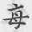 in the original text with top 亠 rather than 𠂉.
The same is true of the component 每 in both occurrences of 繁.
-
經
Written 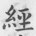 with only 6 residual strokes in the original text,
rather than 7.
-
賾
Written 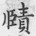 in the original text
with left component ⿰丿臣 rather than U+268DE 𦣞.
-
能
Written semi-cursive 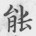 in the original text,
with right component similar to 长.
爰命儒臣、悉取舊籍、次第排纂、切音觧義、一夲說文玉萹、兼用廣韻集韻韻㑹正韻。
Therefore commanded [I the] scholars [and the] ministers,
[that they] take completely [the] old books,
[and by] sequence [and] order arrange [and] compile,
dissecting pronunciations [and] interpreting meanings,
[with] one copy of Explaining Glyphs [and the] Jade Chapters,
[and] simultaneously using [the] Broadened Rimes, [the] Collected Rimes,
[the] Rime Assembly, [and the] Proper Rimes.
其餘字書、一音一義之可採者、靡有遺逸。
[And in the] remaining character books,
those which can [be] picked
of [each] one pronunciation [and each] one meaning,
[that] not [ought] be there omitted [or] lost.
至諸書引證未備者、則自經史百子以及漢晉唐宋元明以来詩人文士所述、莫不旁羅博證、使有依據。
[And] as [for] those not yet provided
[among] all [the] books drawn upon [for] attestation,
then from [the] Classics, [the] Histories, [and the] Hundred Masters,
and [from] that related [by the] poets [and] literary scholars
of [the dynasties] Han, Tsin,
T'ang, Sung, Yüan, [and] Ming [and] theresince,
[that they] do widen [the] net [and] broaden [the] attestations [taken],
making [it] have reliance [and] evidence.
然後古今形體之辨、方言聲氣之殊、部分班列、開卷了然、無一義之不詳、一音之不備矣。
[Then] afterward [the] distinction [between]
olden [and] current forms [and] styles,
[and the] disparity [in] voice [and] air
of [the] speech of [all] places,
[shall by] sections [be] split into ranked rows,
[and on] opening [the] book [be immediately] clear,
having not one meaning not detailed,
[nor] one pronunciation not provided.
-
形： forms; or shapes
-
卷： book; lit. roll
凡五閱嵗、而其書始成、命曰字典。
[A] total of five years passed,
and that book [was] first completed,
[and] named calling [it a] Dictionary.
-
始： first; lit. began
-
字典： Dictionary; lit. Character Canon
扵以昭同文之治、俾承學稽古者、得以備知文字之源流、而官府吏民、亦有所遵守焉。
In illuminating [the] governance of [having the] same glyphs,
[shall it] make the inheritor of learning [and] the examiner of the olden,
get provided [a] knowing of [the] source [and] flow
of glyphs [and] characters,
and [shall] the official, [the] offices, the officer, [and] the people,
also have that which [to] adhere to [and] keep.
Cite this page
Conway (2022).
"Imperially-Made Preface [unto the] K'ang-hi Dictionary".
<https://yawnoc.github.io/lit/kangxi-preface>
Accessed yyyy-mm-dd.